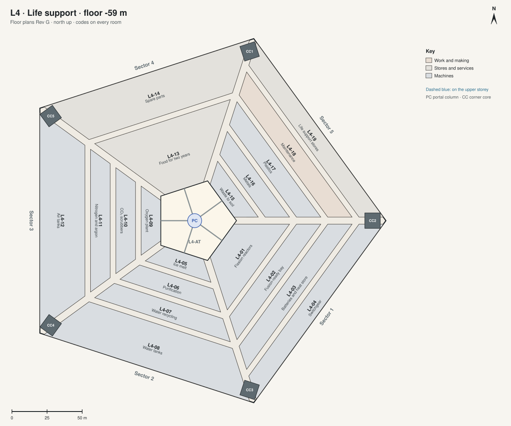

L4 · Life support floor -59 m, 8 m high
The machine room: power, water, air, the storm reserve and recycling.

| Code | Room | What it is for | Also | Size | Two of a kind |
|---|---|---|---|---|---|
| L4-01 | City feed | Power from the city's grid: its two buried cables come in here, by different routes, and become Arcadia's own direct current. | No reactor of its own: the city makes the power (Jim, 6 Oct 2026). | 550 m² | |
| L4-20 | Fuel cells | Standby power, if the city's grid is ever down: fuel cells burning the methane and oxygen kept for the ships. | 910 m² | ||
| L4-02 | Heat pumps | Warmth for the house: heat taken back from the air leaving the rooms and from the machines on this level, about 2 MW in the coldest weeks. | Warm water for the ice melt (L4-05). | 1280 m² | |
| L4-03 | Batteries and heat store | 20 MWh: the evening peak, and the first hours if the grid fails; a tank of hot water for the floors. | 1650 m² | ||
| L4-04 | Switchgear | 2010 m² | |||
| L4-05 | Ice melt | Melting the ice from the mine. | 550 m² | ||
| L4-06 | Purification | Removing the perchlorate salts. | 910 m² | ||
| L4-07 | Water recycling | 98% of the water used again. | 1280 m² | ||
| L4-08 | Water tanks | 4180 m² | |||
| L4-09 | Oxygen plant | Oxygen from carbon dioxide and water. | 550 m² | ||
| L4-10 | CO₂ scrubbers | 910 m² | |||
| L4-11 | Nitrogen and argon | The buffer gases, from the Mars air. | 1280 m² | ||
| L4-12 | Air tanks | 4180 m² | |||
| L4-13 | Food for two years | The storm reserve. | 3260 m² | ||
| L4-14 | Spare parts | 4180 m² | |||
| L4-15 | Waste to soil | 550 m² | |||
| L4-16 | Metals | 910 m² | |||
| L4-17 | Plastics | 1280 m² | |||
| L4-18 | Maintenance | 1650 m² | |||
| L4-19 | Life support stores | 2010 m² |
Shared on this level: L4-AT atrium terrace; L4-BR bridges; L4-PC portal column; L4-ST streets; L4-AV avenues; L4-CC corner cores; CC1 to CC5 the corner cores.